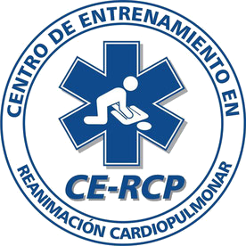
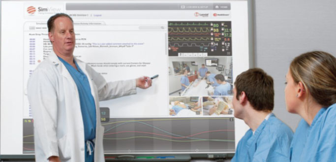
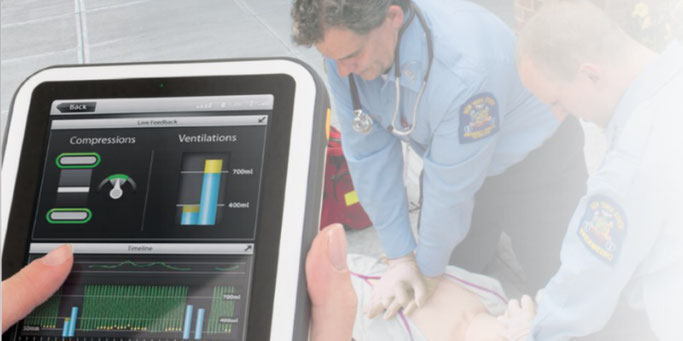

14 de agosto 2018 por Carlos Villota
CE-RCP es un Centro Internacional de Entrenamiento cuya finalidad es aportar conocimientos en el área de la educación
con docentes que suman más de 12 años de experiencia en el sector educativo universitario de las diferentes áreas de
la salud y la simulación clínica.
Ofertamos calidad en los programas y cursos con metodología práctica que permite a los estudiantes adquirir las
competencias requeridas en el desarrollo de su ámbito profesional, todo esto apoyado con equipos de última tecnología
en simulación de pacientes logrando escenarios realistas para el desarrollo de las prácticas.

14 de agosto 2018 por Carlos Villota
Proveer servicios educativos de actualización, complemento, perfeccionamiento, renovación o profundización de
conocimientos necesarios para el desempeño en el campo laboral y el mejoramiento de la prevención de la enfermedad,
cuidado de pacientes hospitalarios y pre-hospitalarios e intervenciones clínicas oportunas que marquen la diferencia
en salvar vidas.

14 de agosto 2018 por Carlos Villota
Al 2020 ser el Centro Internacional de Entrenamiento mas importante del sur occidente colombiano, implementando
actualizaciones científicas y aplicando educación de calidad con metodologías y equipos que se
adapten a las las ultimas tendencias encaminadas en mejorar la salud de los pacientes